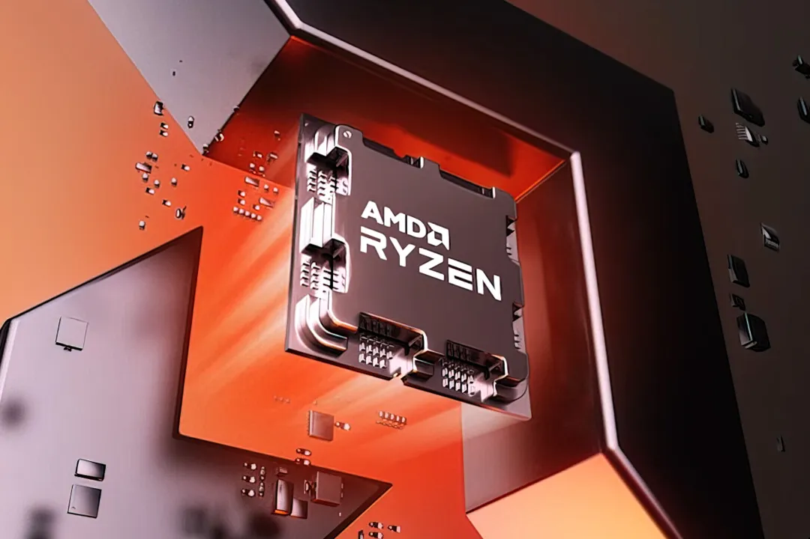

پردازنده جدید AMD با پیشرفت ۳۶ درصدی رؤیت شد؛ رونمایی در CES
- نتایج بنچمارک جدیدترین پردازندهی AMD از سری Hawk Point با نام Ryzen 5 8500G پیش از رونمایی در نمایشگاه CES فاش شده است.
Ryzen 5 8500G در تستهای تک هستهای و چندهستهای بهترتیب امتیاز ۱٬۹۶۵ و ۸٬۷۶۸ را کسب کرده که در مقایسه با امتیازات پردازندهی Ryzen 5 5600G به ترتیب ۱۱ و ۳۶ درصد سریعتر ظاهر شده است.

- Ryzen 5 8500G یک APU جدید از سری هاک پوینت است که روی سوکت AM5 عرضه خواهد شد. این تراشه از معماری هستههای ترکیبی Zen 4 و Zen 4C در کنار معماری گرافیکی RDNA 3 بهره میبرد.
با توجه به بنچمارک فاششده، پردازندهی جدید تیم قرمز دارای ۶ هسته و ۱۲ رشتهی پردازشی است. این تراشه سرعت کلاک پایهی ۳٫۵۵ گیگاهرتز دارد و در حالت بوستکلاک به ۵ گیگاهرتز میرسد. همچنین ۱۶ مگابایت کش L3 و ۶ مگابایت کش L2 این پردازنده را همراهی میکنند.
Ryzen 5 8500G از گرافیک مجتمع رادئون 740M با ۴ واحد محاسباتی بهره میبرد که فرکانس ۲٫۸ گیگاهرتز دارند.
- گرافیک AMD رادئون 740M دو برابر واحدهای محاسباتی بیشتری از رادئون 710M دارد و قاعدتاً باید انتظار عملکرد گرافیکی بهبودیافتهای را داشته باشیم.
هنوز قیمت پردازنده AMD مشخص نیست، اما گفته میشود بین ۱۹۰ تا ۲۱۹ دلار خواهد بود. تیم قرمز تا چند روز دیگر در نمایشگاه CES پردازندههای جدیدش را رونمایی خواهد کرد و قیمت CPU و سایر مشخصات را اعلام میکند. گفته میشود پردازندههای جدید تا ۳۱ ژانویه (۱۱ بهمن) عرضه خواهند شد.
|